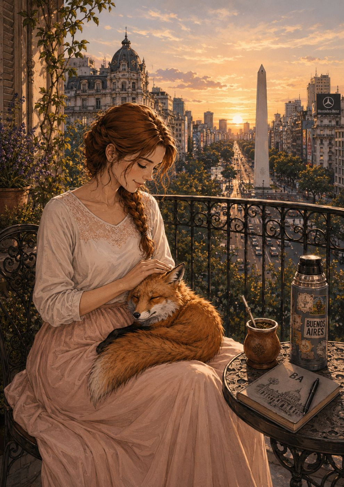
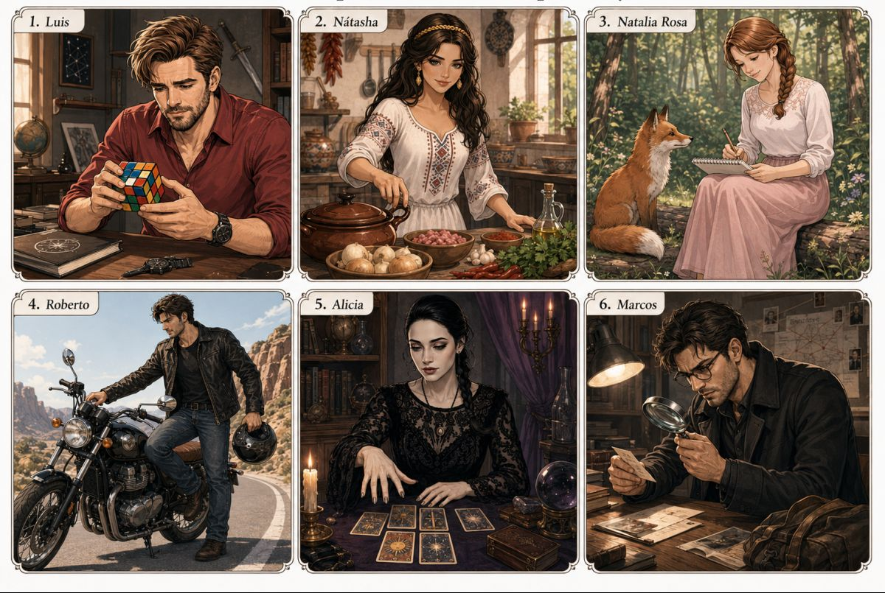
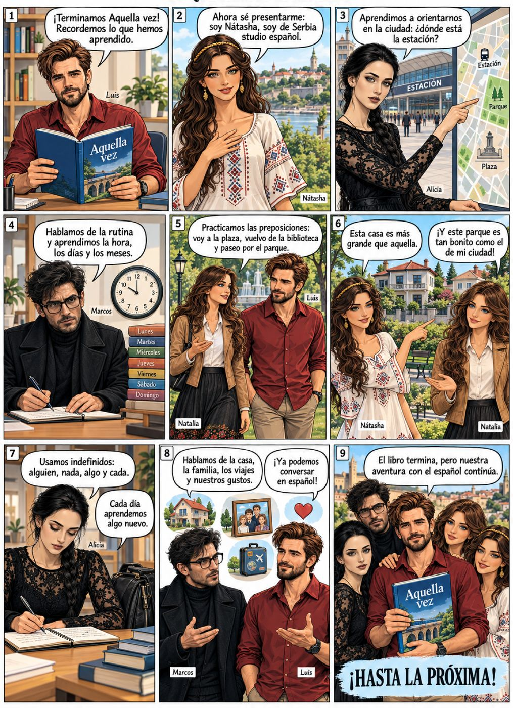

Manual de español para extranjeros · Nivel A1
Aquella vez
Diez unidades para aprender español con personajes, diálogos, pequeñas historias y mucha imaginación.

Prólogo
Decidí escribir este manual de español para ayudar a los estudiantes a aprender de una forma clara, práctica y agradable. Elegí usar un español neutro para que todas las personas que quieran estudiar el idioma puedan sentirse cómodas, sin importar su país o su variante preferida.
También quise que el libro tuviera personajes, diálogos y pequeñas historias. Soy escritor, y para mí una lengua no vive solo en las reglas gramaticales, sino también en las personas, las emociones y las situaciones. Por eso, en estas páginas aparecen personajes de mis novelas y de mi mundo literario.
Espero que este manual sea una puerta de entrada al español, pero también a la imaginación. Que cada texto, cada ejercicio y cada imagen ayuden al estudiante a aprender, recordar y disfrutar el camino.
Luis Fader
Mayo de 2026
Cómo está organizada cada unidad
- A · B · CDiálogos, lecturas y ejercicios con los personajes del libro.
- DGramática: las reglas con tablas y ejemplos claros.
- ECultura del mundo hispanohablante.
- FHistorieta para repasar todo lo aprendido.
Puedes escribir tus respuestas directamente en los ejercicios y marcar V o F. Tus respuestas se guardan en este navegador.
Unidades
 Unidad 1Saludos, profesiones y números
Unidad 1Saludos, profesiones y números- A. ¿Qué tal?
- B. ¿A qué te dedicas?
- C. ¿Me das tu número?
- D. Gramática
- E. Cultura
- F. Historieta

Unidad 2La familia, la casa y la hora- A. Te presento a mi familia
- B. ¿Dónde estás?
- C. Contamos
- D. Gramática
- E. Cultura
- F. Historieta
 Unidad 3La rutina diaria
Unidad 3La rutina diaria- A. ¿A qué hora te levantas?
- B. ¡Vamos!
- C. Un día típico
- D. Gramática
- E. Cultura
- F. Historieta
- Unidad 4La ciudad y la casa
- A. Me encanta mi ciudad
- B. En el metro
- C. Mi casa es tu casa
- D. Gramática
- E. Cultura
- F. Historieta
 Unidad 5Gustos y comida
Unidad 5Gustos y comida- A. Las cosas que me gustan
- B. ¡A comer!
- C. No quiero nada
- D. Gramática
- E. Cultura
- F. Historieta
- Unidad 6Acciones en curso y descripciones
- A. ¿Qué estás haciendo?
- B. Se está quemando la comida
- C. ¿Cómo es tu novia?
- D. Gramática
- E. Cultura
- F. Historieta
 Unidad 7El pasado: ¿qué hiciste?
Unidad 7El pasado: ¿qué hiciste?- A. ¿Qué hiciste ayer?
- B. Hace frío
- C. Mi día de ayer
- D. Gramática
- E. Cultura
- F. Historieta
- Unidad 8Recuerdos, salud y planes
- A. Cuando era niño
- B. Me duele la cabeza
- C. ¿Qué vas a hacer mañana?
- D. Gramática
- E. Cultura
- F. Historieta
 Unidad 9Órdenes, comparaciones y misterios
Unidad 9Órdenes, comparaciones y misterios- A. ¡Haz lo que te digo!
- B. ¡No compares!
- C. Aquí hay algo misterioso...
- D. Gramática
- E. Cultura
- F. Historieta
- Unidad 10Biografías, estados y despedida
- A. Biografías
- B. Está todo bien
- C. No creerás lo que me pasó
- D. Gramática
- E. Cultura
- F. Reflexión final
- G. Historieta
 Test finalVeinticinco preguntas de gramática, vocabulario y traducción sobre todo el manual. ¿Apruebas?
Hacer el test
Test finalVeinticinco preguntas de gramática, vocabulario y traducción sobre todo el manual. ¿Apruebas?
Hacer el test
Los personajes
Luis, Nátasha, Natalia Rosa, Roberto, Alicia y Marcos —y muchos más— viajan por Sinea, Madrid, San Petersburgo y la fortaleza turquesa. Con ellos el español se aprende en situaciones divertidas, misteriosas y románticas.


Repaso final¡Hasta la próxima!La historieta que cierra el libro.